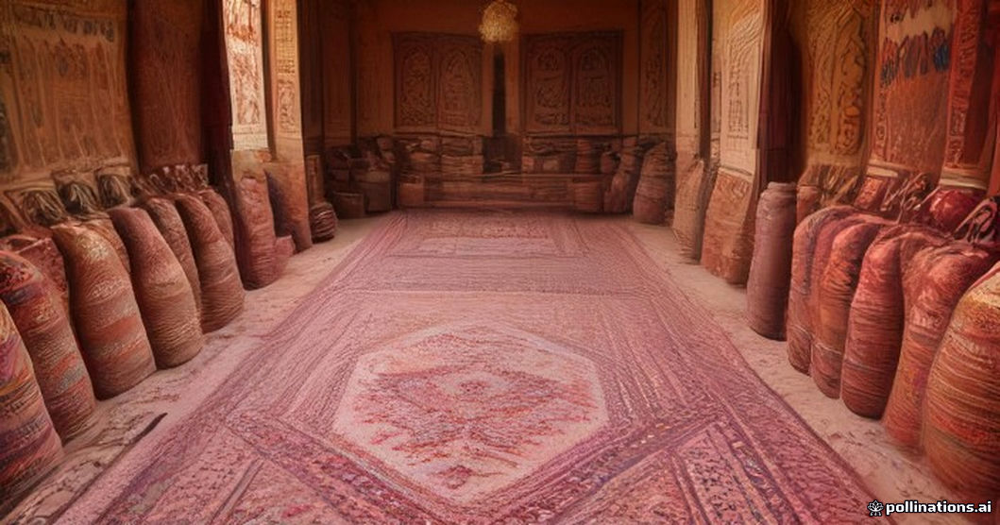

Many travelers fall in love with Moroccan textiles while passing through the Tafilalt oasis on their way to the dunes. Whether you are looking for a heavy, winter-weight Berber blanket or a knotted tribal rug, buying a carpet or blanket in the Tafilalt requires a bit of patience and clear baseline knowledge.
We are local operators, not rug merchants, but our guests constantly ask us how to navigate the local souks and cooperatives safely. Here is an honest look at materials, pricing structures, and the actual logistics of getting your purchase back home without getting bogged down in high-pressure sales tactics.
Judging Wool Quality and Weave
The first thing to understand is the material. Authentic regional pieces are made from pure sheep's wool, camel hair, or a mix, often woven by Amazigh women's cooperatives in remote mountain or desert villages. Real wool has a distinct, natural lanolin smell that softens over time and feels slightly springy under your hand. Synthetic blends or acrylic fibers, which are increasingly common in cheaper mass-market stalls, feel slick, lack resilience when pressed, and will not hold up to heavy foot traffic.
Look closely at the back of the textile. Hand-knotted carpets will show the individual knot patterns clearly on the reverse side, and no two knots will be entirely uniform. If you are shopping for a winter blanket, check the density of the weave by holding it up to the light. A tightly packed warp and weft means better wind resistance and durability.
- Check for the natural lanolin smell of real sheep wool.
- Examine the reverse side to verify hand-knotted patterns.
- Avoid overly bright neon synthetics unless you specifically want decorative cotton-blend throws.
Typical Price Bands in the Tafilalt
Pricing in Morocco is rarely fixed outside of official cooperative storefronts, and bargaining is part of the culture. However, prices are fundamentally tied to weight, hours of labor, and material costs. According to market surveys gathered from regional craft guilds in Rissani and Merzouga, a standard smaller flat-weave Kilim starts around 300 to 600 dirhams (roughly $30 to $60 USD), while larger, heavy pile carpets can easily exceed 3,000 to 6,000 dirhams ($300 to $600 USD) based on intricacy.
If a merchant offers you a large, heavy, supposedly vintage hand-knotted rug for the price of a small machine-made flat-weave, it is either synthetic or heavily discounted due to structural damage. Always factor in your luggage limits before buying; for more details on space constraints, read our guide on luggage limits and carrying souvenirs on a 4x4 tour.
Shipping Realities vs. Carrying It With You
One of the biggest questions travelers face is whether to check the textile onto their flight or use international shipping. Most reputable cooperatives and larger shops in the Rissani area partner with official postal services or private couriers like DHL. Shipping usually costs between 800 and 2,500 dirhams depending on weight and destination country, and delivery takes anywhere from two to six weeks.
Our honest advice? If the rug fits inside your suitcase or a sturdy duffel bag, roll it tightly and check it as luggage. It is usually cheaper and far more reliable than postal shipping, which can occasionally get delayed at customs checkpoints. For tips on managing your gear space alongside bulkier items, review our advice on luggage storage and Sahara desert packing.
Navigating Souks and Avoiding Traps
Shopping in the Tafilalt should feel like a cultural exchange rather than an endurance test. Merchants will often invite you to sit down for sweet mint tea—this is genuine hospitality, but it also establishes a social contract where walking away immediately after can feel awkward. Take your time, look at multiple pieces, and never feel pressured to buy on your first stop.
If you want a low-stress environment with fixed, transparent pricing that supports local artisans directly, visit an official women's cooperative rather than a random roadside stall. For broader advice on how to handle local vendors and avoid common pitfalls, read our overview on how to navigate Rissani and Midelt souks without carpet traps.
| Material & Type | Typical Price Range | |
|---|---|---|
| Small Kilim | Flat-weave cotton and wool blend | 300 – 600 MAD ($30 - $60 USD) |
| Beni Ourain Style | Heavy cream wool with dark lines | 1,500 – 4,500 MAD ($150 - $450 USD) |
| Winter Blanket | Thick woven wool with tassels | 400 – 900 MAD ($40 - $90 USD) |
| Large Vintage Rug | Aged wool, high knot density | 3,000 – 8,000+ MAD ($300 - $800+ USD) |

Illustration, not a photograph — for the real thing, you'll have to stand on the ridge yourself.
Quick answers
A few follow-up questions travelers ask about this.
How can I tell if a rug is genuinely handmade?
Check the fringe—on a handmade rug, the fringe is a natural continuation of the warp threads, whereas machine-made rugs usually have fringes stitched on afterward. Additionally, look at the back to ensure the knot pattern is irregular and organic.
Is it better to buy in the cities like Marrakesh or out in the Tafilalt?
Buying in the Tafilalt region (near Merzouga and Rissani) often brings you closer to the source and the weaving cooperatives, frequently resulting in better baseline prices before heavy markup in tourist hubs.
What payment methods do local carpet sellers accept?
Cash (Moroccan Dirhams, Euros, or US Dollars) is universally preferred. Some larger shops accept credit cards, but they often add a 3% to 5% processing fee to cover local bank charges.
Planning your own route?
Tell us your dates and what matters to you — we'll answer with a straight recommendation, not a brochure.
Send an inquiry See the itineraries